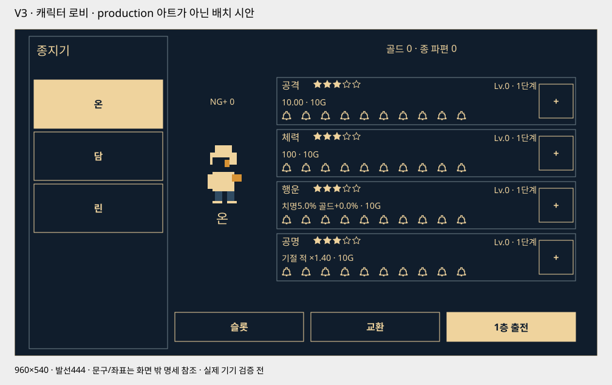

전투는 형태로, 성장은 종으로
| 항목 | v3 기준 |
|---|---|
| 입력 | ▲ ◀ ▼ ▶ 네 방향 회피 + 검 아이콘 공격. 앞 회피는 적을 통과하지 않는 짧은 진입 후 복귀 |
| 공격 예고 | 인물 주변 위험 위치의 궤적·점멸·형태. 상단 공격 설명과 상시 정답 화살표 제거 |
| 상태 막대 | 플레이어·일반 적 HP는 각 발밑. 중간 보스·보스 HP는 상단의 긴 막대. 기절은 종 아이콘과 막대·자세로 전달 |
| 타격감 | 픽셀 숫자 피해 팝업, 피격 지점의 사각 파편, 치명타의 짧은 월드 흔들림 |
| 진입 | 최초 실행 즉시1층 → 회피 → 공격 튜토리얼 → 연속 진행. 사망하면 로비 |
| 성장 | 캐릭터별 공격력·체력·행운·공명, 고정 별점, + 강화와10개 종. 10→11·20→21에 큰 성장 |
| 진행 | 50층, 10단위 보스 체크포인트. 50층 엔딩 후 해당 캐릭터의 다음 회차1층 |
| 특별 재화 | 종파편: 중간 보스1 / 보스3, 반복 처치도 지급. 골드 교환·장착 슬롯·현금 상품 |
읽는 HUD에서 보는 전투로
왼손은 네 방향 삼각형 키, 오른손은 검 아이콘을 누른다. 앞·뒤 회피는 짧게 파고들거나 물러난 뒤 기준 위치로 돌아온다. 적을 통과하거나 좌우가 뒤집히지 않는다.
플레이어와 일반 적의 체력은 각 인물 발밑에 둔다. 중간 보스·보스 체력은 상단 안전영역 안의 긴 막대로 표시하고 적 발밑에는 중복 표시하지 않는다.
기절 글자·누적 숫자는 제거한다. 종 아이콘과 긴 막대가 차오르고, 가득 차면 적이 주저앉으며 별·종 파문이 나타난다. 같은 막대는 기절 잔여 시간으로 줄어들고 면역 중에는 잠긴 형태를 보여준다.
초기 예고는 단발650ms, 연타 시작 전체 궤적900ms, 후속 타격 재강조250ms다. 현재 타격은 진하게, 다음은 옅게 최대2개까지 표시한다. 연타마다650ms 독립 예고를 순차 재생하는 방식은 쓰지 않는다.
| 위험 형태 | 위험 위치 | 대응 회피 |
|---|---|---|
| 낮은 쓸기 | 발목 가까운 수평 궤적 | ▲ 뛰기 |
| 높은 쓸기 | 머리·상체 높이의 궤적 | ▼ 숙이기 |
| 찌르기 | 적에서 몸통 앞쪽으로 좁혀오는 선 | ◀ 물러나기 |
| 바깥 원호 | 뒤·바깥쪽을 휩쓰고 안쪽은 빈 곡선 | ▶ 파고들기 |
| 연출 | 초기 기준 | 판정을 가리지 않는 조건 |
|---|---|---|
| 피해 팝업 | 맞은 대상 옆 픽셀 숫자, 약0.45초 상승·소멸 | HP 막대·다음 예고와 겹치지 않도록 측면 슬롯 사용. 실제 피해가0이면 팝업 없음 |
| 사각 파편 | 명중1회당4~6개, 치명타 최대8개 | 0.3초 이내, 대상 주변으로 분리. 아래HP를 덮지 않고 피격 방향에 맞춰 튐 |
| 치명타 | 강조색·큰 숫자, 월드2~3 논리px·80ms | HUD·버튼·위험 예고는 고정. 흔들림 끄기/줄이기 제공. 일반 피격에는 흔들림 없음 |
| 회피·기절 규칙 | 초기값 |
|---|---|
| 회피 | 유효160ms + 복귀100ms, 다음 입력까지260ms. 마지막60ms가 완벽 |
| 기절 누적 | 일반+20 / 완벽+40, 100에서 발동. 피격−20. 해당 적 전투에서만 유지 |
| 기절 상태 | 일반1.5초 / 중간1.2초 / 보스1초. 남은 공격 취소, 종료 후2초 누적 면역 |
| 공격 | 간격500ms·준비100ms. 회피로 취소 가능하나 공격 간격 환급 없음. 출전 중 성장값 고정 |
공격 예고는 위험이 오는 위치다. 눌러야 할 방향을 항상 표시하는 장치가 아니다. 소리·진동·화면 흔들림을 꺼도 궤적과 자세만으로 구분되어야 한다. 수치는 신작의 초기 가설이며 원작 실측값이 아니다.
처음에는 바로 싸운다
튜토리얼은 올바른 회피와 유효한 공격을 차례로 확인한다. 틀린 입력은 다음 단계로 넘어가지 않으며 보호된 첫 연습에서만 피해를 막는다. 기다리는 동안 전투 시계와 예약 타격도 함께 멈춘다.
단계 완료를 저장해 앱 중단 뒤 같은 단계부터 안전하게 재개한다. 튜토리얼 종료 후 상시 정답 키나 공격 문구를 남기지 않는다. 나머지 방향은 처음 등장할 때 위험 궤적과 안전 공간을 충분히 보여준다.
사망하면 결과 보상을 확정하고 선택 캐릭터가 유지된 로비로 돌아온다. 일시정지의 ‘귀환’도 같은 체크포인트 규칙으로 출전을 끝낸다. 강화하려고 일부러 죽을 필요는 없다.
앱 중단은 사망이 아니다. 출전 HP·적 HP·층·회차·처리한 보상ID를 보존하고 재개 시 진행 중 타격을 취소해 온전한 예고부터 다시 시작한다. 재실행을 무료 회복으로 사용하지 않는다.
왼쪽에서 고르고, 오른쪽에서 키운다

좌측 약1/4에 이름이 들어간 가로형 캐릭터 패널을 세로로 쌓는다. 이름을 터치하면 우측의 Idle 미리보기·능력치·별점·강화 레벨·회차·다음 출발층이 해당 캐릭터로 바뀐다.
우측 상단은 계정 공용 골드·종파편이다. 능력치 네 행에는 고정 별점, 현재 값,10개 종, 다음 강화 비용과 + 버튼을 둔다. 통화·가격을 아이콘만으로 숨기지 않는다.
로비 첫 개방 시 세 캐릭터를 무료 선택할 계획이다. 첫 시제품은 온1명으로 연결하고 나머지는 개발 중으로 구분한다. Idle 미리보기는 유료 상품이나 능력치가 아닌 선택한 캐릭터를 보여 준다.
| 캐릭터 | 공격 | 체력 | 행운 | 공명 | 특징 |
|---|---|---|---|---|---|
| 온 · 종지기 | ★★★☆☆ | ★★★☆☆ | ★★★☆☆ | ★★★☆☆ | 균형형 · 최초 출전 |
| 담 · 성문지기 | ★★☆☆☆ | ★★★★★ | ★★☆☆☆ | ★★★☆☆ | 체력 중심 · 실수 허용 |
| 린 · 잔향지기 | ★★★★☆ | ★★☆☆☆ | ★★★★☆ | ★★☆☆☆ | 공격·행운 중심 |
별점은 캐릭터의 고정 성장 적성이다. 확률 뽑기·별 강화·유료 승급은 이번 범위에 없다. 캐릭터를 바꿔도 다른 캐릭터의 성장이나 체크포인트를 덮어쓰지 않는다.
별점은 증가 폭, 종은 지금까지의 강화
네 능력치는 별도 강화Lv.0~50이다. Lv.0에도 기본 전투 능력은 존재하고 종만 모두 비어 있다. 같은 비용을 써도 해당 능력치의 별점이 높을수록 더 많이 성장한다.
10→11·20→21·30→31·40→41에서 큰 돌파가 일어난다. 9→10은 통상 강화다. Lv.50은 이번 초기 상한이며51돌파를 미리 표시하지 않는다.
별은 강화로 차오르는 자원이 아니다. 종10개가 해당 레벨 구간의 진행을 표시한다. 강화 구매·레벨 상승·골드 차감은 한 번의 저장으로 확정한다.
| 스탯 | 전투 효과 | 제한 |
|---|---|---|
| 공격력 | 공격1회의 기본 피해 | 공격 속도·회피 타이밍은 그대로 |
| 체력 | 출전 시 최대HP | 출전 중 강화 불가, 일반층 사이 HP 유지 |
| 행운 | 치명타 확률과 처치 골드 증가 | 종파편1/3·현금 상품·교환·중복 유물 골드는 증가하지 않음 |
| 공명 | 기절한 적에게 주는 피해 배율 증가 | 기절 시간·누적량·회피창·공격 속도는 늘리지 않음 |
| 강화 레벨 | 종 표시 | 공격 ★1 | 공격 ★3 | 공격 ★5 |
|---|---|---|---|---|
| 0 | 1구간 · 0/10 | 10.00 | 10.00 | 10.00 |
| 9 | 1구간 · 9/10 | 37.00 | 39.70 | 42.40 |
| 10 | 1구간 · 10/10 | 40.00 | 43.00 | 46.00 |
| 11 | 2구간 · 1/10 | 86.00 | 106.49 | 128.96 |
| 20 | 2구간 · 10/10 | 140.00 | 174.80 | 213.20 |
| 21 | 3구간 · 1/10 | 292.00 | 419.50 | 578.66 |
| 50 | 5구간 · 10/10 | 2,560.00 | 4,897.22 | 8,682.54 |
q=1+0.05×(별−1), b=max(0,floor((L−1)/10)). 공격=(10+3qL)×(2+0.15×(별−1))^b, HP=round((100+20qL)×(1.6+0.1×(별−1))^b). L은각스탯별레벨. 행운·공명 공식은 전투 담당의 v3 규칙표를 따른다. E=q×(L+10b). 치명=min(30%,5%+0.15%p×E), 골드증가=min(20%,0.18%p×E), 공명배율=min(1.75,1.4+0.002E). 최종합산상한 적용. 피해는 최종1회 반올림, 처치골드는 행운 적용 후 내림.
| 강화 비용 | 도달 레벨 기준 |
|---|---|
| Lv.1~10 | 회당10G |
| Lv.11 / Lv.12~20 | 돌파60G / 회당20G |
| Lv.21 / Lv.22~30 | 돌파90G / 회당30G |
| Lv.31 / Lv.32~40 | 돌파120G / 회당40G |
| Lv.41 / Lv.42~50 | 돌파150G / 회당50G |
보스를 넘긴 기록만 출발점을 바꾼다
성문 · 1–10
사슬 회랑 · 11–20
멈춘 시계 · 21–30
잿빛 첨탑 · 31–40
새벽의 종루 · 41–50
5·15·25·35·45층은 중간 보스,10·20·30·40·50층은 보스다. 체크포인트는10단위 보스만 만든다. 캐릭터마다 회차·체크포인트·최고 도달 기록이 따로 저장된다.
출전은 최대HP로 시작한다. 일반 적·중간 보스 사이에는 남은HP를 유지한다.10·20·30·40보스를 처치하면 회복과 체크포인트를 확정한 뒤 다음 층으로 자동 진행한다.
사망·귀환은 현재 회차의 마지막 체크포인트 다음 층에서 재출전한다. 이미 확정한 전리품·성장은 유지한다. 완료한 과거 보스만 골라 즉시 재입장하는 기능은 초기 범위에서 제외한다.
| 상황 | 다음 출전 |
|---|---|
| 9층까지 완료,10보스에 사망 | 같은 캐릭터·회차의1층 |
| 10보스 완료 후19층에서 사망 | 11층 |
| 20보스 완료 후29층에서 사망 | 21층 |
| 40보스 완료 후50보스에 사망 | 41층 |
| 50보스 완료 후 다음 출전 | 해당 캐릭터만 다음 회차1층 |
| 시점 | 능력·행동 | 저장 |
|---|---|---|
| 첫 시작 | 잠든 종·불씨를 첫 전투 배경으로 표현 | 선행9초 컷신 없음 |
| 10·20·30·40 | 구역에 빛이 돌아옴, 자동 진행 유지 | 체크포인트+보상 한 결과로 저장 |
| 50완료 | 계정 최초 50완주는 약6초 엔딩 후 로비, 이후 완주는 바로 로비. 건너뛰기·무료 다시 보기 | 보상·캐릭터별 완주·다음 회차 준비를 한 번만 확정 |
| 다음 출전 | 강화 몬스터·1층·최대HP | 성장·유물 유지, 해당 캐릭터 체크포인트0 |
z=floor((층−1)/10), j=(층−1)%10. 첫 회차 HP기초=[120,1050,4200,13500,40000], 피해기초=[8,40,110,280,650]. HP=round(기초×1.07^j×종류배율), 피해=ceil(기초×1.045^j×종류배율). HP종류배율 일반1/중간1.8/보스3.2, 피해1/1.15/1.3. NG+1은 HP기초[22000,26000,31000,37000,44000]·피해기초[500,600,700,800,900]의 별도 고정표, 이후 회차마다 HP×1.35·피해×1.20. 예고/회피창은 줄이지 않으며 초기 검증 범위는 NG+0~2다.
| 층 | 종류 | 적 HP | 피격 피해 |
|---|---|---|---|
| 1 | 일반 | 120 | 8 |
| 5 | 중간 | 283 | 11 |
| 10 | 보스 | 706 | 16 |
| 11 | 일반 | 1,050 | 40 |
| 15 | 중간 | 2,477 | 55 |
| 20 | 보스 | 6,177 | 78 |
| 21 | 일반 | 4,200 | 110 |
| 25 | 중간 | 9,910 | 151 |
| 30 | 보스 | 24,709 | 213 |
| 31 | 일반 | 13,500 | 280 |
| 35 | 중간 | 31,852 | 384 |
| 40 | 보스 | 79,421 | 541 |
| 41 | 일반 | 40,000 | 650 |
| 45 | 중간 | 94,377 | 892 |
| 50 | 보스 | 235,323 | 1,256 |
출전 중 강화 없이, 10전을 버티는 초기 계산
| 고정 출전 | 구간 | 최대HP | 순수 전투량 | 예상 피해 | 보스 회복 전 잔여 |
|---|---|---|---|---|---|
| 온 · 네 스탯Lv0 · 기준 | 1~10 | 100 | 126.3초 | 67.2HP | 32.8HP |
| 온 · 네 스탯Lv0 · 학습 | 1~10 | 100 | 136.8초* | 142.7HP | 평균식상10층 고갈 |
| 온 · 네 스탯Lv11 · 기준 | 11~20 | 616 | 102.8초 | 289.8HP | 326.2HP |
| 온 · 네 스탯Lv21 · 기준 | 21~30 | 1,821 | 101.6초 | 829.6HP | 991.4HP |
| 온 · 네 스탯Lv41 · 기준 | 41~50 | 10,519 | 95.6초 | 5,261.6HP | 5,257.4HP |
| 온 · Lv50 · NG+2 기준 | 41~50 | 12,597 | 114.9초 | 10,347.4HP | 2,249.6HP |
| 린 · Lv50 · NG+2 기준 | 41~50 | 9,605 | 87.9초 | 8,189.1HP | 1,415.9HP |
유물 없음·10전 동안 능력 고정. 기준: 공격활용90%/회피성공92%/전체타격 중 완벽35%, 학습:85%/85%/15%. F=100/[20(q−p)+40p−20(1−q)]×평균타격간격으로 기절 주기를 근사한다. 첫1~5층 예상 피해는 기준20.0/학습40.9HP. 표의 시간은 생존을 가정한 순수 전투량이며 사망·귀환·강화·전환을 제외한다. *학습136.8초는 실제 완주시간이 아니다. 서로 다른 출전 레벨의 행을 합쳐 캠페인 시간으로 쓰지 않는다. 평균식은 게이지 경계·연속 실수·개별 타격을 정확히 모사하지 않는다.
적은 캐릭터의 현재 레벨에 자동으로 맞춰지지 않는다. v2의30층·스테이지별 HP전회복·현재층 재도전·474초 가정은 폐기한다. 실제 완주 시간·사망 횟수·NG+도달 시간은 시제품 관찰로 확인한다.
종파편을 얻고 투자 방향을 고른다
| 획득·사용 | 초기값 | 조건 |
|---|---|---|
| 중간 보스 | 매 유효 처치 종파편1개 | 5/15/25/35/45, 처음·반복·캐릭터·회차 동일 |
| 보스 | 매 유효 처치 종파편3개 | 10/20/30/40/50, 같은 결과 중복 지급 금지 |
| 기본 골드 | 일반40/70/100/130/160G | 구역별; 중간×3 / 보스×5 |
| 장착 슬롯 | 1→2:4파편 / 2→3:8파편 | 계정10/20층 완료 후 구매 가능, 개방 권리는 공유 |
| 골드 교환 | 1종파편 → 100골드 | 역교환·강제 예약 없음 |
| 현금 상품 | 4/12/20종파편 | 1,100/3,300/5,500원 후보, 최종 등록 전 검증 |
50층 한 회차의 기본 지급은 종파편20개, 골드8,000G다. 종파편은 반복 보스에서도 같은 수량을 얻으며 최초 추가 보너스는 없다. 사망 전 처치 보상은 보존한다.
슬롯2를10층 완료 후 로비에서4개로 구매하면20층까지 남은4개로는 슬롯3의8개를 살 수 없다. 교환·추가 처치 없이30층을 완료하면 슬롯3 예산이 충족되며, 실제 구매는 다음 로비에서 한다. 20층 완료는 구매 가능 조건이며 무료 즉시 완성을 의미하지 않는다.
계정 공유 슬롯을 캐릭터마다 다시 사지 않는다. 종파편을 골드로 바꾸면 슬롯 구매가 늦어질 수 있으므로 교환 전 비용·잔액·다음 슬롯 가격을 함께 보여 준다.
모든 캐릭터의 골드 소비처가 소진되면 골드 교환을 숨긴다. 소비처가 모두 소진되면 종파편 판매도 숨기고 잔액은 보존한다. v2의 새벽석15/2·현금판매 보류·결과 광고를 승계하지 않는다.
NG+에서도 기본 골드·종파편 수량은 같은 표를 쓴다. 행운은 전투 기본 골드에만 적용해 처치별로 내림하고, 중복 유물 골드는 그 뒤 더한다. 귀환·로비·재출전 시간을 포함한 파밍 속도는 아직 측정하지 않았다.
| 처치 위치 | 유물 | 효과 |
|---|---|---|
| 5 | 재의 고리 | 공격력+8% |
| 10 | 새벽의 조각 | 최대HP+12% |
| 15 | 사슬 종추 | 일반 회피 누적+25%:20→25 |
| 20 | 맑은 종추 | 완벽 회피 누적+25%:40→50 |
| 25 | 종망치 파편 | 기절 적 피해 배율+0.10 |
| 30 | 새벽의 장막 | 피해감소8% |
| 35 | 꺼진 심지 | 공격력+6% |
| 40 | 청동 매듭 | 최대HP+10% |
| 45 | 울림 고리 | 치명확률+3%p |
| 50 | 여명의 종인 | 기절 적 피해 배율+0.03 |
| 소유 범위 | 저장 항목 |
|---|---|
| 계정 공용 | 골드·획득/유료 종파편·유물 보유함·슬롯 권리·튜토리얼·계정 첫 엔딩 |
| 캐릭터별 | 4개 강화 레벨·고정 별점ID·장착 조합·회차·현재 체크포인트·최고 기록 |
| 현재 출전 | 캐릭터ID·능력 스냅샷·현재 층·양측HP·적 패턴·난수 상태·진행 중 결과ID |
| 거래 기록 | 처치 attemptId·보상 확정·영수증 거래ID·차감/지급·회차 완료 중복 방지 |
현금 상품은 기획 후보이며 실제 결제 기능은 없다. 유물과 종파편은 남은 장착 공간과 무관하게 지급한다. 같은 보상/구매 거래를 중복 콜백으로 다시 지급하지 않는다.
첫10층에서 입력·생존·성장을 연결한다
| 단계 | 만드는 범위 | 확인할 것 |
|---|---|---|
| 1 · 연결 시제품 | 온1명,10층+11진입,4방향·튜토리얼·로비·종 강화·유물2종 | 9사망→1,10완료→11,HP 유지,공명/행운역할,실수이유 |
| 2 · 경계 검사 | 개발용50완료·엔딩·NG+상태,중단/저장/지갑 테스트 | 회차중복증가·같은보상중복·캐릭터간기록덮어쓰기 없음 |
| 3 · 콘텐츠 확장 | 캐릭터3명·50층·유물10종·강화회차·원스토어상품 | 10층 생존예산·파밍시간·별점차·유료/무료진행 |
| 리소스 | 수량·범위 |
|---|---|
| 플레이어 | 3명×16=48프레임:대기2+공격3+4방향회피각2+피격1+패배2 |
| 적 | 일반4원형×23=92, 보스3원형×24=72. 5중간보스·보스2지점은 변형 재사용 |
| 총 동작 | 212프레임 후보. 첫10층 시제품은 온+일반2원형+중간1변형+보스1원형만 제작 |
| 효과 | VFX21프레임 후보+파편2텍스처+숫자0~9글리프. 흔들림은 코드 연출 |
| UI·환경 | 4방향·검·종·별·체력·기절·통화 아이콘, 캐릭터 로비4스탯,5구역 배경 |
| 콘텐츠 | 50층 데이터·10유물아이콘,튜토리얼2행동,50엔딩·다음회차 |
최소640×360,기본960×540,와이드1200×540과안전영역·120%글자에서레이아웃을확인한다.삼각형은작게보여도터치영역은충분히확보하고동시에겹치지않게한다.
관찰 테스트는 첫2단계 안내 뒤 정답 표시 없이4방향을 구별하는지,기절 순간 공격하고 싶어지는지,체력 위치를 놓치지 않는지부터 확인한다.첫 출전과 성장 후 출전을 따로 측정한다.
v2의 프레임수·완주시간·공수는 확대된 v3에 그대로 적용하지 않는다. 제작비와 일정은 첫 시제품 및 실제 제작 자산을 기준으로 다시 추정한다.
v2 대비 순증은 아트/배치8~15, 코드/데이터11~19, 경계/입력 검증4~7인일로 합계23~41인일 후보(1인일6시간)다. 실제 견적·전체 납기가 아니며 결제 서버·SDK·심사 검증은 별도다.
CombatModel이 판정·피해·기절·전투 시계를 소유한다. HP/기절 막대·픽셀 숫자·파편은 결과를 받아 표시한다. 연출 시간이나 화면 흔들림이 판정창을 바꾸지 않는다.
Excel 원본의 Character·StatGrowth·Stage·PatternSteps·Relic·CurrencyProduct·Copy에서 데이터 카탈로그를 생성한다. UI는 저장 프리팹의 anchor·레이아웃을 사용하고 매 프레임 임의 좌표를 덮어쓰지 않는다.
50보스 보상·완주·다음 회차 준비와10보스 보상·체크포인트를 각각 원자적으로 저장한다. UI가 닫혔거나 앱이 재실행되어도 같은 거래를 다시 지급하지 않는다. 현금 구매는 검증된 거래ID를 서버 지급 기록과 연결한다.
현금 재화 추가가 매출 상승을 보장하지 않는다
종파편은 성장과 슬롯에 쓰이는 현금 구매 가능 재화다. 성능에 영향 없는 외형 상품으로 설명하지 않는다. 무료 보스 파밍과 경쟁하므로 상품 추가만으로 구매율을 올려 계산하지 않는다.
기존130,080원 수치를 v3 예상 매출로 재사용하지 않는다. 별도 결제자 비율과 구매액의 민감도만 제시하며 광고 매출은 승계하지 않는다.
| 상품 후보 | 가격 | 제공 |
|---|---|---|
| 종파편4 | 1,100원 | 종파편4 |
| 종파편12 | 3,300원 | 종파편12 |
| 종파편20 | 5,500원 | 종파편20 |
| 30일 민감도 | MAU | 결제자 비율 | ARPPU | 모형상 수입 |
|---|---|---|---|---|
| 구매0 | 2,000 | 0% | 0원 | 0원 |
| 낮음 | 2,000 | 0.5% | 1,100원 | 7,840원 |
| 중간 | 2,000 | 1.5% | 2,200원 | 47,040원 |
| 높음 | 2,000 | 3% | 3,300원 | 141,120원 |
종파편 직판 수입 모형: MAU×결제자 비율×월ARPPU×0.98÷1.1×0.8. 환불2%·수수료20%·할인없음 가정, 광고·외형·노무비·이용자확보비용 제외. 계정별 감면·실제정산액은 확인 전.
가격·전환율·파밍 시간은 출시 전에 검증해야 할 가정값이다. 노동비·유료 이용자 확보 비용을 제외한 금액을 사업 이익으로 표시하지 않는다. 원스토어 연동 조건은 담당 문서의 공식 출처와 확인일을 따른다.
담당별 교차 검토와 검증 기록
| 담당 | 검토 | 상태 |
|---|---|---|
| 기획 | 첫 출전·귀환·캐릭터·체크포인트·엔딩 | 최종 동의 · 필수 수정 반영 |
| 전투 | 4방향·별점성장·치명·공명·50층·연출 | 최종 동의 · 필수 수정 반영 |
| UI | 무텍스트 전투·로비·10개 종·작은 화면 | 최종 동의 · 필수 수정 반영 |
| 경제 | 반복1/3 지급·공유 슬롯·교환·직판·수익 | 최종 동의 · 필수 수정 반영 |
기획·전투·UI·경제 4개 담당이 v3 통합 기준에 동의했고 필수 수정 사항을 반영했다.
기획 검토 완료는 실제 재미·결제·출시 검증 완료를 뜻하지 않는다.
현재 결정 기록 · 수치·상태 전이 검사 · 렌더·상호작용 검사 · 이전 v2